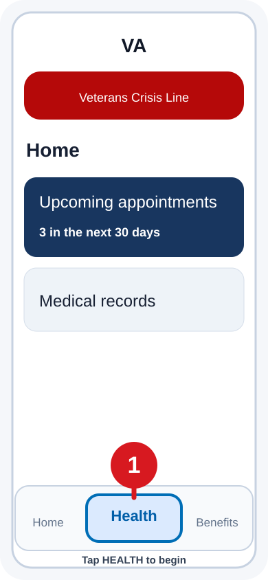

Public service workflow · evidence organization · no rating guarantee
Create a VA disability compensation claim with the VA app, VA.gov, and ChatGPT.
Download your VA medical record, organize all claim-relevant evidence, draft truthful statements, and file through VA.gov. ChatGPT is an evidence organizer and drafting assistant—not a clinician, accredited representative, or VA decision-maker.
Purpose: accurate claims, not inflated claims. This guide is not intended to help every veteran obtain a 100% disability rating. Its purpose is to help veterans organize and truthfully present the evidence needed for VA to determine the evaluation supported by their service-connected conditions under applicable federal law.
Ask the VA process guide
This bounded guide answers common procedural questions and points to official VA sources. It does not predict ratings, create medical opinions, or replace an accredited representative.
VA Guide: Ask about downloading records, evidence, intent to file, direct or secondary claims, personal statements, filing, or claim status.
Current mode: deterministic official-process guide. Live LLM answers and private document analysis are still in development. Watch this box for messages describing the assistant's verified abilities and completeness.
Important: Never submit invented facts, altered dates, unsupported diagnoses, or a medical nexus that no qualified clinician provided. A diagnosis by itself does not prove service connection.
Protect your information: Claim-related documents may contain Social Security numbers, addresses, diagnoses, financial details, names of witnesses, and other sensitive information. Use a private device, trusted network, secure storage, and a private ChatGPT conversation. Review and redact information that is unnecessary for the task when practical, and retain untouched originals outside ChatGPT.
Phase 1 — Download your complete VA medical record
1Open the official VA app
Sign in. On the Home screen, tap Health.
2Open Medical records
From Health, tap Medical records.
3Continue to VA.gov
Tap Review medical records on VA.gov. Sign in through ID.me or Login.gov when prompted.
4Open the report workflow
Find Download your medical records, then choose Go to download your medical records reports.
5Start a Blue Button report
Choose Select records and download report.
6Select the date range
Choose All time unless you have a specific reason to limit it.
7Select record categories
Choose Select all VA records and confirm the displayed categories remain checked.
8Choose PDF and download
Choose PDF, tap Download report, and complete the browser's second download prompt.
9Find and preserve the file
Open Files, check Recents, then Browse. Rename the report clearly and retain an untouched original.

Image 1 — Start in the VA app and tap Health.
Phase 2 — Submit all claim-relevant documents to ChatGPT for organization
10Gather every document that may affect the claim
The Blue Button report is only one source. You may attach any documents that may support, contradict, clarify, or otherwise affect the claim, including:
VA Blue Button reports and other VA medical records
Service treatment records and military personnel records
Private medical records, hospital records, imaging, laboratory reports, and sleep studies
Medical opinions, nexus letters, disability benefit questionnaires, and examination reports
Prior VA rating decisions, decision letters, code sheets, and examination notices
Statements from the veteran, family members, coworkers, supervisors, or service members
Employment, attendance, accommodation, disciplinary, or earnings records when functional effects are relevant
Medication histories, assistive-device records, symptom logs, calendars, photographs, and other relevant evidence
Include unfavorable or conflicting records as well as supportive records. A reliable review should identify contradictions and missing evidence rather than hide them.
11Attach the documents
Open a new private ChatGPT conversation. Tap +, choose the file option, and select the relevant PDFs, images, text files, or other supported documents. Large collections may need to be submitted in clearly labeled groups.
12Run a bounded multi-document evidence review
Review all attached documents as an evidence organizer, not as a decision-maker. Build one claim-evidence table per proposed condition. For every factual entry, identify the source document and exact page or section. Separate:
1. Current diagnosis or persistent symptoms;
2. In-service event, injury, illness, exposure, or onset evidence;
3. Continuity and treatment history;
4. Medical nexus, secondary causation, or aggravation evidence;
5. Current severity and functional effects;
6. Lay and witness evidence;
7. Contrary, inconsistent, or potentially unfavorable evidence;
8. Missing evidence.
Do not invent a diagnosis, service event, onset date, nexus, severity, or rating. Distinguish facts stated in the documents from inferences, and mark every uncertain item [VERIFY].
Phase 3 — Build one claim theory at a time
Direct: current disability, in-service event/injury/disease, and evidence connecting them.
Secondary: a condition caused or aggravated by an already service-connected disability or treatment.
Increase: current evidence that an already service-connected condition has worsened.
Presumptive/exposure: verify the current official VA eligibility rule.
Aggravation: evidence of measurable worsening beyond the expected course.
Classify each proposed condition as: ready for factual drafting; needs service-event documentation; needs current diagnosis or severity evidence; needs a qualified nexus or aggravation opinion; needs lay evidence; contains conflicting evidence requiring resolution; or appears unsupported/duplicative. Explain the missing or conflicting item and safest next action.
Phase 4 — Draft the personal statement
Draft a first-person Statement in Support of Claim for [CONDITION] using only facts I confirm and facts supported by the attached documents. Cover the condition, in-service event, symptom onset, continuity, current symptoms and frequency, functional effects, and attached evidence. Do not add medical conclusions. Put [VERIFY] beside every date or fact requiring confirmation.
Phase 5 — Organize and check the packet
Create one folder per claimed condition.
Keep untouched source records separately.
Create an evidence index with file, date range, source, and condition supported.
Compare every drafted sentence against the record and your personal knowledge.
Remove unsupported conclusions, duplicate evidence, and contradictory dates.
Use a clinician for diagnosis, causation, aggravation, and severity opinions.
Phase 6 — File on VA.gov
Open VA Form 21-526EZ online.
Confirm personal, banking, and service information.
Add each disability precisely.
Identify VA and private treatment sources.
Upload organized evidence and review every answer.
Sign, submit, and save the confirmation.
Monitor status and evidence requests through VA.gov or the VA app.
Boundary: This educational workflow does not determine eligibility, service connection, effective date, diagnostic code, or percentage evaluation. The user must verify every submission against the original records and current official requirements.